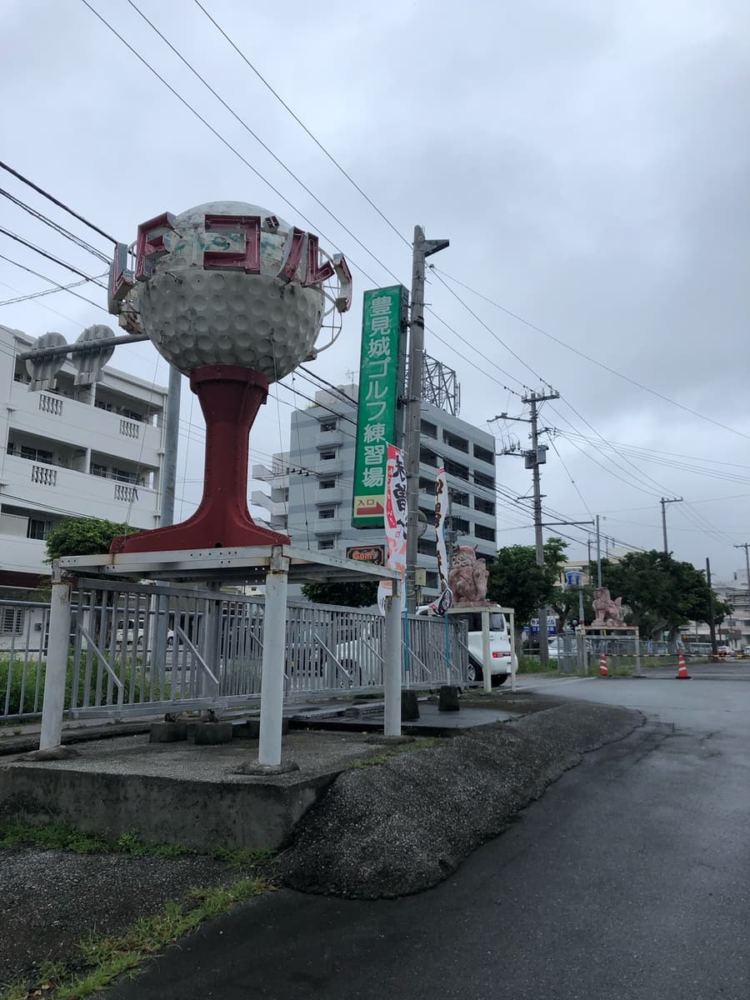
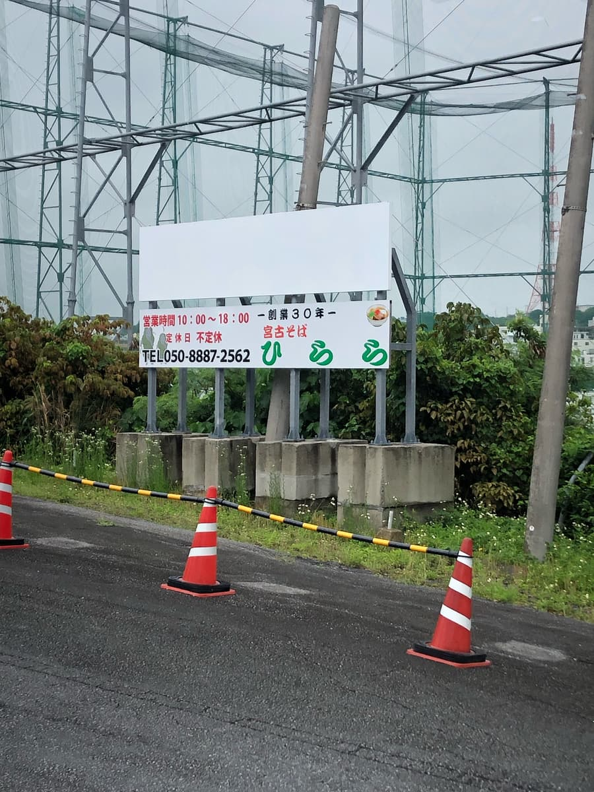
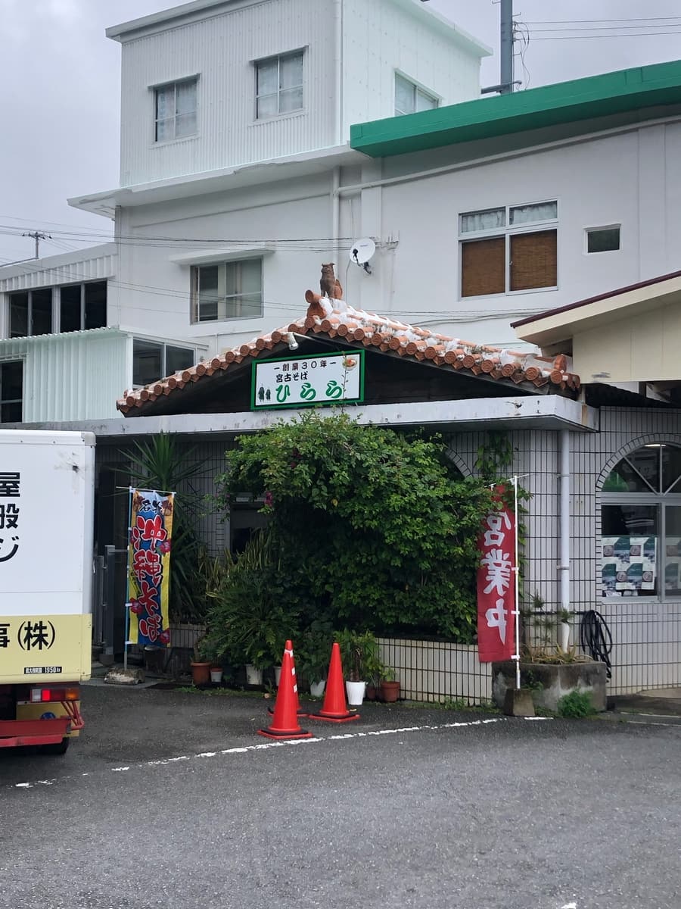
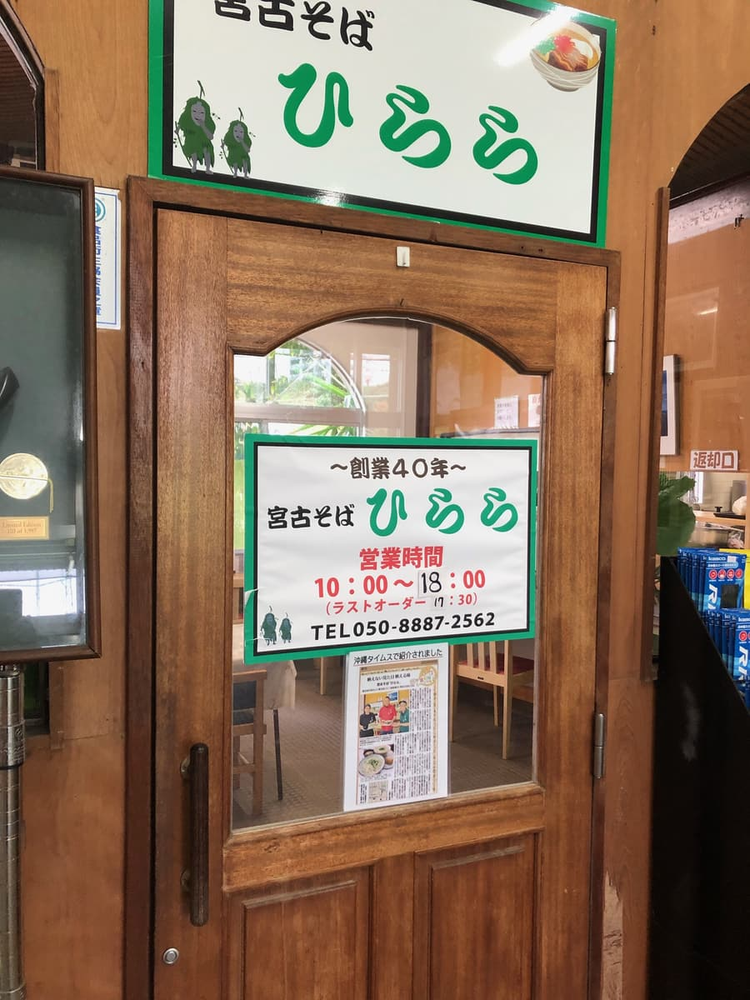
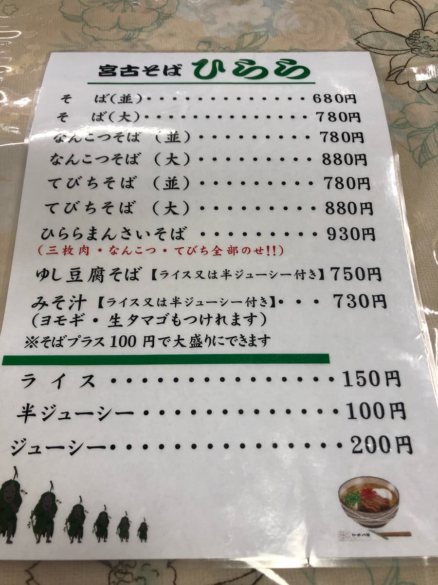
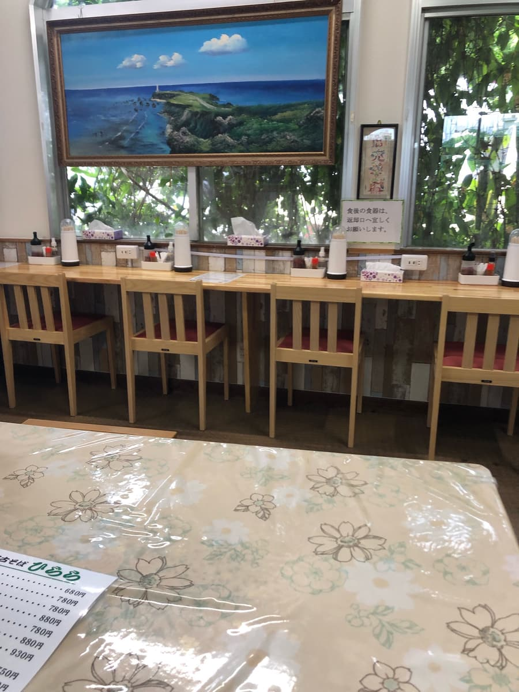
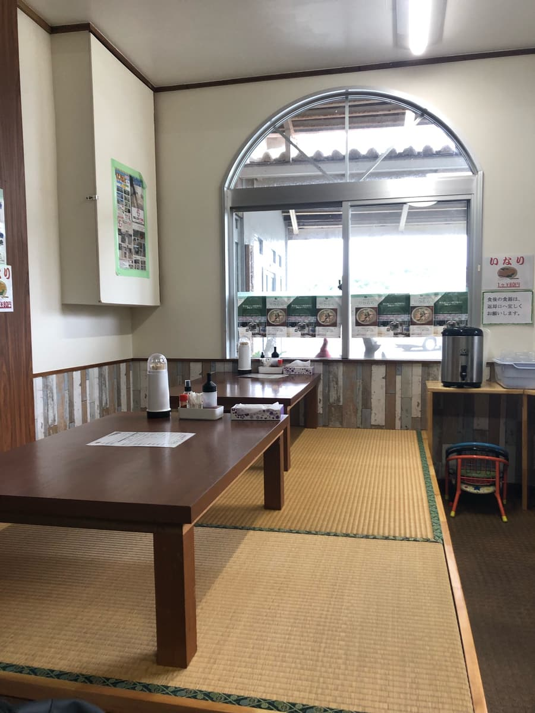
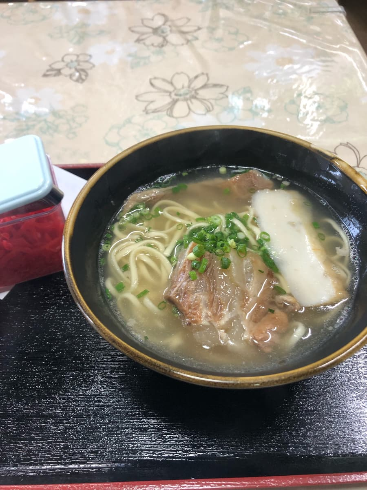
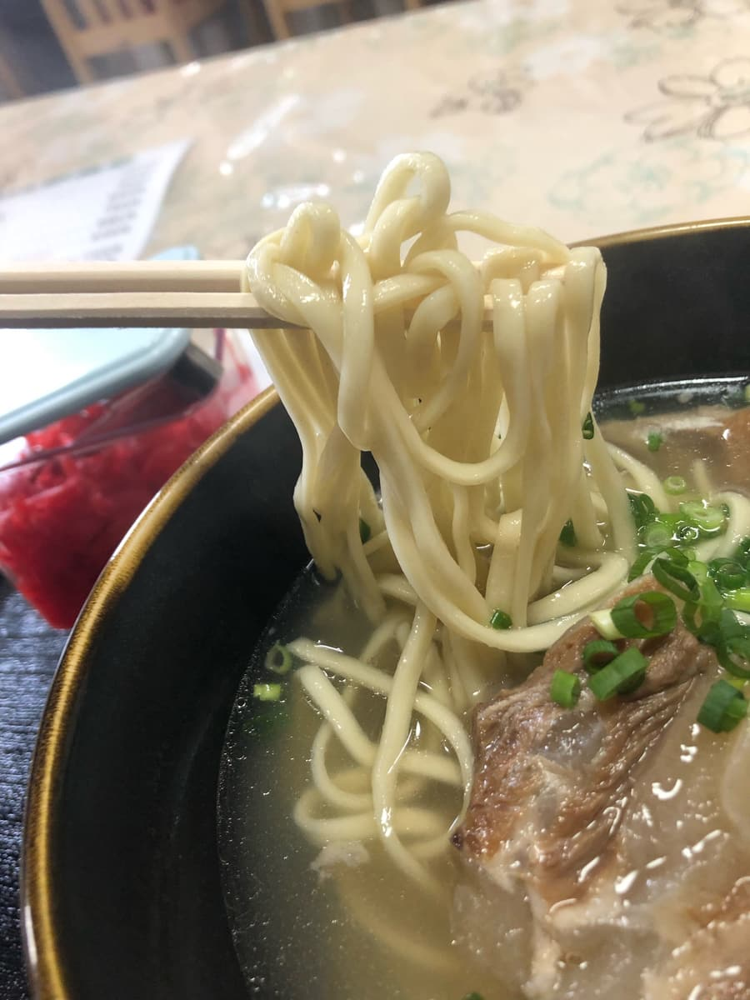

2024年5月吃的😁这家店是我从地方报纸的介绍得知的😁 不过这条路其实是我每个周末去冲浪点（自杀崖浪点）常常会经过的路(^0^;)
完全没想到挥杆练习场里竟然有冲绳面店(^0^;)





从菜单上，不知怎地就点了「软骨面（普通份）」。
不过吃完之后，再回头看报纸报导，后悔了(^0^;)
这家店的卖点，似乎是刊在菜单最上方的「面」。
传统的宫古面，特色是配料藏在面的底下，菜单上方的「面」就是这种。
乍看之下只有葱和面，以「不上相」为卖点，是坚持昔日传统宫古面的风格。
宫古面我只在跑集章活动时吃过冲绳市的「宫古面爱」，但爱的并不是这种风格。
因为写着「面」，我单纯误以为是素面（没配料）(^0^;) 早知道就点「面」了。



这家的配料是正常放在面的上面呢(^0^;)
汤头是猪骨与柴鱼的合并高汤，猪骨味很突出。
吃起来就是普通好吃的感觉。

接着是面。中细的偏圆直面，属于软的类型。软骨排骨也炖得软嫩入口即化，但也有些地方残留筋感。
评分（9分/15分）：普通好吃。我推荐点据说是宫古面传统、配料藏在面底下的不上相「面」😄 打高尔夫的人，要不要来这个练习场试试看呢？
面：★★★☆☆（3）
汤头：★★★☆☆（3）
配料：★★★☆☆（3）